https://cafe.daum.net/subdued20club/ReHf/5733841?svc=cafeapi
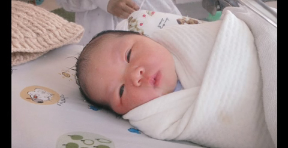
2012년 2월 태국 방콕에서 매터린(애칭은 아인즈)
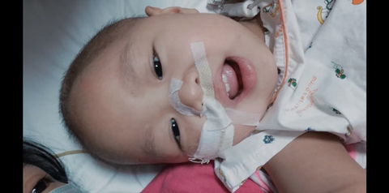
가족들의 사랑 속에서 자란 아인즈는
2살의 나이에 뇌암 판정
정확히는 뇌실막모세포종인데 원인도 모르고
생존자도 없음
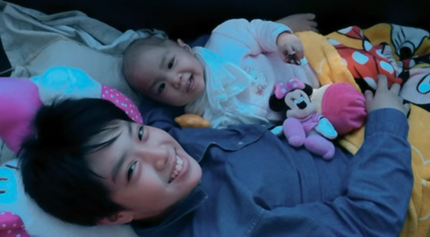
9개월 동안 아인즈는 11번의 수술과 26회의
방사선 치료, 40회의 항암치료를 버팀
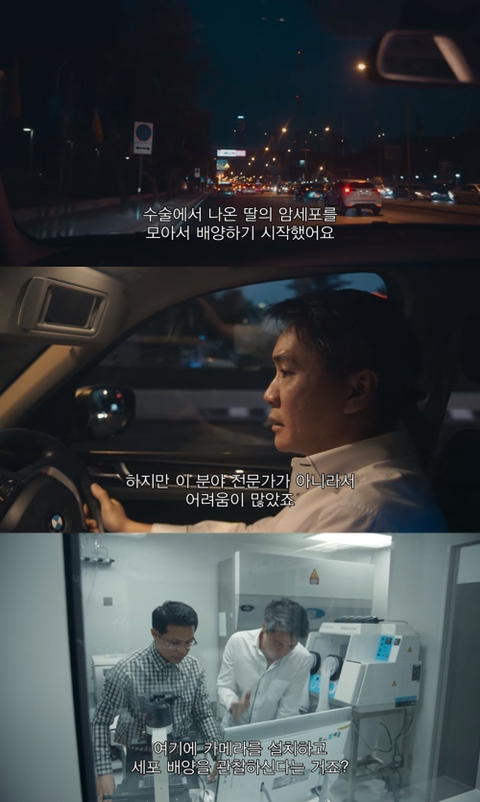
태국 최고의 명문대인 쭐라롱콘 대학교의
과학자인 아빠도 연구에 뛰어들지만..
지금껏 그래왔듯 그 어떤 것도 밝혀낼 수가 없고
죽음은 가까짐
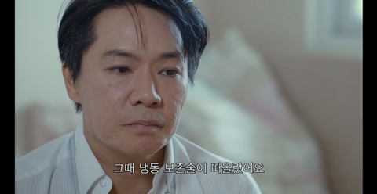
그때 아빠는 냉동 보존을 떠올림
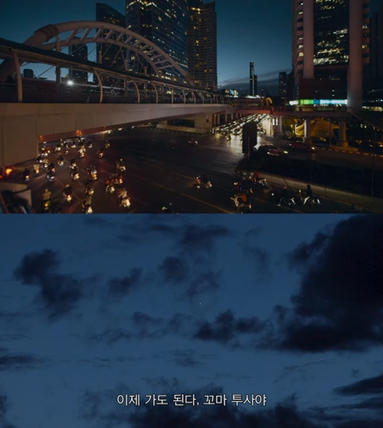
2015년
3살도 되기 전에 사망 선고를 받은 아인즈...
여기서 신기했던게 냉동은 죽기 직전에 하는건 줄 알았음
근데 사후에 하는게 법이라고 함
죽어도 뇌와 신체 기능들이 한동안 유지가 되는데
그 골든타임에 재빠르게 진행을 하는거
또 전신보단 뇌만 따로 보존하는걸 많이 한다고 함
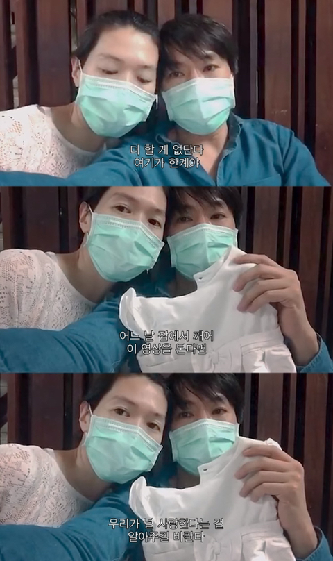
엄마 아빠는 0.01프로의 가능성에 희망을 걸었.....
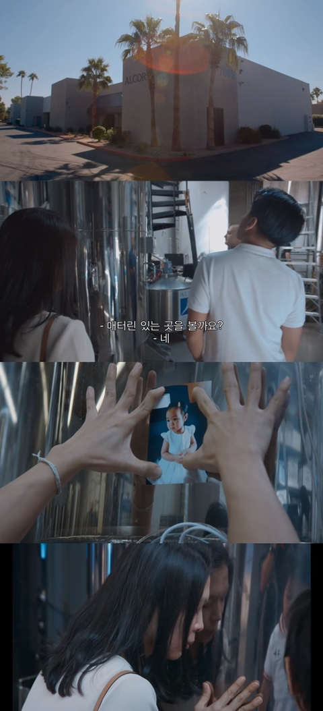
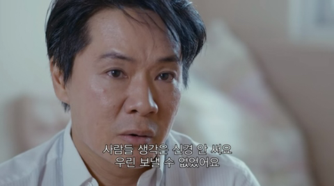
이 곳은 미국 애리조나주의 alcor 생명 연장 재단으로
아인즈도 여기에 있음
고객의 절반 이상이 실리콘밸리의 ceo라 함
아이는 동의했냐, 아이가 편히 쉬지 못하는거 아니냐, 나였으면...
등등의 말들을 쏟아내는 사람도 많음
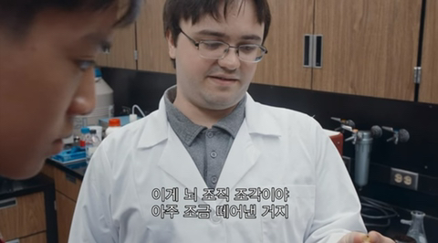
얼마 후
미국의 한 연구소에서 얼린 토끼의 뇌를
손상없이 해동하는데 성공
사람에게 적용한다면?
가능성은 아주 희박하다는 과학자
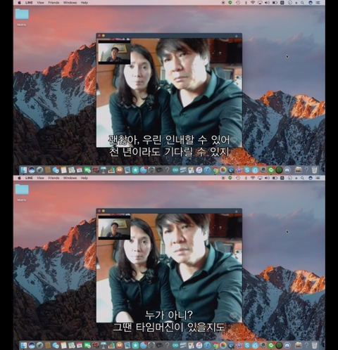
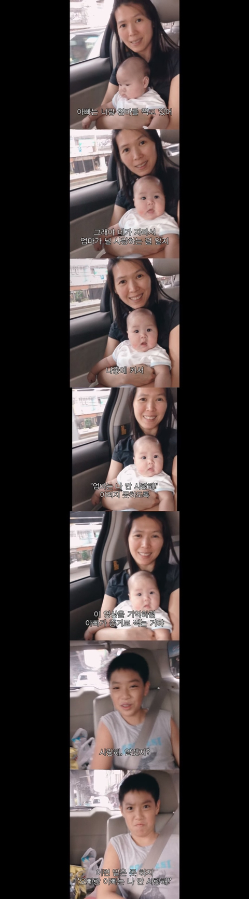
부모님 세대엔 가망이 없더라도
오빠는 죽기 전엔 동생을 만나고 싶어함
(sbs다큐보니 이번에 의대에 합격)
그리고 사실 이런 경우는 대부분 가족들도
사후 냉동을 신청한다고 함

ㅇㅇ ㅋㅋㅋㅋ근데 내가 말한건 얼음결정가지고 태클 걸만한 문제가 아니란거임
세포독성문제때문에 토끼 신장도 최근에서야 해동했을때 다시 원래 기능 회복시키는거 성공했음
사실상 그전에 썻던 부동액들이랑 기술들 적용된 사비스들은 최근기술로 냉동된 사람들이 깨어나더라도 아마 훨씬 더 먼 미래에 깨어나거나 영구적으로 손상된채로 깨어나거나 아예 못깨어날수 있음